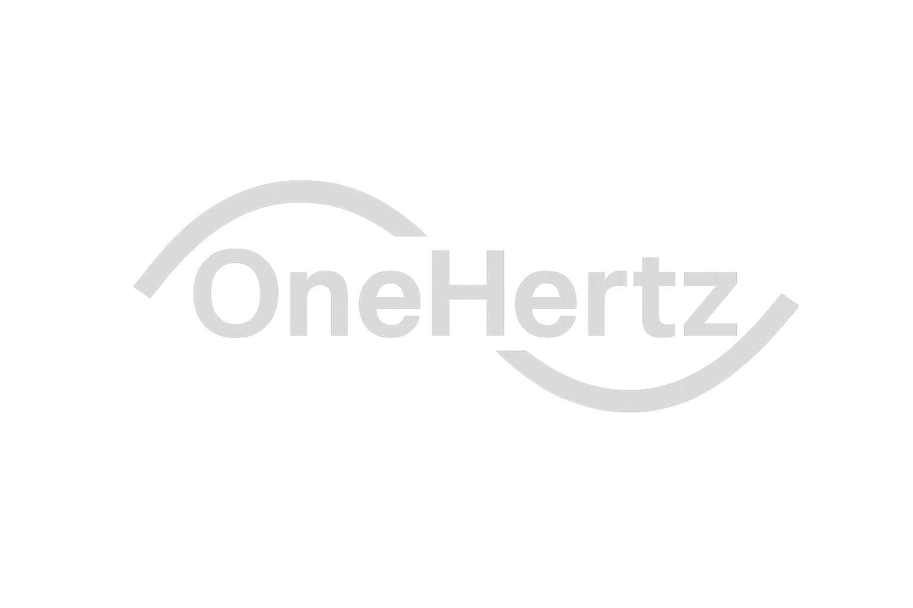

<header>
  <!-- Add stars and nebula background that will appear behind the navbar -->
  <div class="nebula-clouds"></div>
  <div class="stars" id="stars"></div>

  <nav class="navbar navbar-expand-lg navbar-dark fixed-top">
    <div class="container-fluid">
      <!-- Brand with logo - with professional padding -->
      <a class="navbar-brand nav-link" href="#" data-page="home">   
          
      </a>

      <!-- Mobile Toggle -->
      <button class="navbar-toggler" type="button" data-bs-toggle="collapse" data-bs-target="#navbarNav"
        aria-controls="navbarNav" aria-expanded="false" aria-label="Toggle navigation">
        <span class="navbar-toggler-icon"></span>
      </button>

      <!-- Navbar Links - with professional padding -->
      <div class="collapse navbar-collapse justify-content-end" id="navbarNav"> 
        <ul class="navbar-nav space-nav">
          <li class="nav-item">
            <a class="nav-link active" href="#" data-page="home">Home</a>
          </li>
          <li class="nav-item">
            <a class="nav-link" href="#" data-page="about">About</a>
          </li>
          <!-- Products dropdown -->
          <li class="nav-item dropdown">
            <a class="nav-link dropdown-toggle" href="#" id="productsDropdown" role="button" data-bs-toggle="dropdown" aria-expanded="false">
              Platform
            </a>
            <ul class="dropdown-menu space-dropdown" aria-labelledby="productsDropdown">
              <li><a class="dropdown-item" href="#" data-page="computing">Computing Platform</a></li>
              <li><a class="dropdown-item" href="#" data-page="satellite">Satellite Platform</a></li>
              <li><a class="dropdown-item" href="#" data-page="sensor_module">Sensor/Module Platform</a></li>
            </ul>
          </li>
          <li class="nav-item">
            <a class="nav-link" href="#" data-page="contact">Contact</a>
          </li>
        </ul>
      </div>
    </div>
  </nav>

  <!-- Space Theme Styles -->
  <style>
    /* Space background styling */
    .stars {
      position: fixed;
      top: 0; left: 0;
      width: 100%; height: 100%;
      pointer-events: none;
      z-index: 3; /* Increased z-index to ensure visibility */
    }
    
    /* Update stars to match satellite.html blue theme */
    .star {
      position: absolute;
      border-radius: 50%;
      animation: twinkle 3s infinite;
      box-shadow: 0 0 15px 5px rgba(150, 200, 255, 0.7); /* Blue glow for stars */
      background: rgba(255, 255, 255, 0.9); /* Ensure stars have a visible background */
    }
    
    .star:nth-child(3n) {
      background: #fff; /* White stars */
      box-shadow: 0 0 20px 5px rgba(255, 255, 255, 0.9); /* Stronger glow */
    }

    .star:nth-child(3n+1) {
      background: rgba(150, 200, 255, 0.9); /* Subtle blue stars */
      box-shadow: 0 0 20px 5px rgba(150, 200, 255, 0.7); /* Cooler blue glow */
    }

    .star:nth-child(3n+2) {
      background: rgba(200, 200, 200, 0.9); /* Silver stars */
      box-shadow: 0 0 20px 5px rgba(200, 200, 200, 0.7); /* Silver glow */
    }
    
    @keyframes twinkle {
      0%,100% { opacity:0.6; transform: scale(1);}
      50% { opacity:1; transform: scale(1.7); box-shadow: 0 0 30px 10px rgba(150, 200, 255, 0.8);} 
    }
    
    /* Add shooting stars effect */
    .shooting-star {
      position: absolute;
      width: 6px;
      height: 6px;
      background: #fff;
      border-radius: 50%;
      box-shadow: 0 0 30px 15px rgba(150, 200, 255, 0.8),
                  0 0 50px 30px rgba(150, 200, 255, 0.6);
      animation: shoot 8s linear infinite;
      opacity: 0;
      z-index: 3;
    }

    @keyframes shoot {
      0% { 
        opacity: 0;
        transform: translate(0, 0); 
      }
      5% { 
        opacity: 1; 
      }
      10% { 
        transform: translate(calc(tan(var(--angle)) * var(--distance)), var(--distance));
        opacity: 0;
      }
      100% { 
        opacity: 0;
        transform: translate(calc(tan(var(--angle)) * var(--distance)), var(--distance));
      }
    }
    
    /* Adjust the nebula-clouds to match blue theme */
    .nebula-clouds {
      position: fixed;
      top: 0; left: 0;
      width: 100%; height: 100%;
      background: url('https://www.transparenttextures.com/patterns/noise-pattern-with-subtle-cross-lines.png');
      opacity: 0.15;
      pointer-events: none;
      z-index: -1;
      mix-blend-mode: screen;
      filter: grayscale(80%) brightness(0.6) hue-rotate(190deg); /* Added blue tint with hue-rotate */
      animation: nebulaDrift 240s infinite linear;
    }
    
    /* Add a nebula "dust" overlay for depth with blue tint */
    .star-dust {
      position: fixed;
      top: 0; left: 0;
      width: 100%; height: 100%;
      background: url('https://www.transparenttextures.com/patterns/stardust.png');
      opacity: 0.2;
      pointer-events: none;
      z-index: 2;
      filter: hue-rotate(190deg); /* Blue tint */
      animation: dust-drift 240s infinite linear;
    }

    @keyframes dust-drift {
      0% { background-position: 0 0; }
      100% { background-position: 1000px 1000px; }
    }
    
    @keyframes nebulaDrift {
      0% { background-position: 0 0; }
      100% { background-position: 1000px 1000px; }
    }
    
    /* Navbar styling with blue-black gradient */
    .navbar {
      background: linear-gradient(to bottom, rgba(5, 15, 30, 0.9), rgba(3, 8, 20, 0.95)) !important;
      backdrop-filter: blur(10px);
      border-bottom: 1px solid rgba(100, 150, 200, 0.2); /* Blue tinted border */
      padding: 0; /* Reduced from 5px to prevent navbar from growing too tall */
      transition: all 0.3s ease;
      min-height: 0 !important; /* Force no minimum height */
      height: auto !important; /* Automatic height based on content */
      overflow: visible; /* Ensure logo can extend beyond navbar if needed */
    }
    
    /* Updated container fluid for professional spacing */
    .navbar .container-fluid {
      padding-left: 3.5%; /* Professional spacing on left side */
      padding-right: 3.5%; /* Professional spacing on right side */
      display: flex;
      justify-content: space-between;
      width: 100%;
      align-items: center; /* Center items vertically */
    }

    /* Remove unnecessary padding from navbar-brand */
    .navbar-brand {
      margin-right: 0; 
      padding: 0;
      background: transparent;
      border: none;
      box-shadow: none;
      display: flex;
      align-items: center;
    }

    /* Maximize logo size while maintaining navbar proportions */
    .logo-img {
      height: 160px; /* Increased for maximum size */
      width: auto;
      filter: brightness(1.4) contrast(1.4) drop-shadow(0 0 22px rgba(100, 180, 255, 0.8)); /* Enhanced glow */
      transition: all 0.4s ease;
      position: relative;
      z-index: 2;
      padding: 3px 0; /* Reduced padding to prevent navbar growth */
      margin-left: -15px; /* Increased negative margin to offset larger size */
      object-fit: contain; /* Ensures logo doesn't overflow */
      max-width: none; /* Remove max-width constraints */
    } 
    
    /* Completely remove navbar-brand::before */
    .navbar-brand::before {
      display: none !important; /* Force hide with !important to override all other rules */
      content: none !important; /* Additional prevention */
      background: none !important;
      box-shadow: none !important;
      border: none !important;
      animation: none !important;
    }
    
    /* Simplified hover effect with no box */
    .navbar-brand:hover .logo-img {
      transform: translateY(-3px) scale(1.08); /* Slightly larger scale on hover */
      filter: brightness(1.6) contrast(1.6) drop-shadow(0 0 25px rgba(100, 180, 255, 0.9)); /* Stronger glow */
    }

    /* Hover state completely removes box */
    .navbar-brand:hover::before {
      display: none !important;
      opacity: 0 !important;
    }
    
    /* Nav links styling with blue accents */
    .space-nav .nav-link {
      color: rgba(255, 255, 255, 0.85) !important;
      font-weight: 500;
      position: relative;
      padding: 0.3rem 0.8rem;
      transition: all 0.3s ease;
      text-shadow: 0 2px 4px rgba(0, 0, 0, 0.3);
      margin-top: 0;
    }
    
    .space-nav .nav-link::after {
      content: '';
      position: absolute;
      width: 0;
      height: 2px;
      bottom: 0;
      left: 50%;
      transform: translateX(-50%);
      background: linear-gradient(to right, #64c8ff, #9b85ff); /* Blue to purple gradient like satellite.html */
      transition: width 0.3s ease;
    }
    
    .space-nav .nav-link:hover {
      color: #ffffff !important;
      text-shadow: 0 0 8px rgba(150, 200, 255, 0.5); /* Blue glow on hover */
    }
    
    .space-nav .nav-link:hover::after,
    .space-nav .nav-link.active::after {
      width: 70%;
    }
    
    .space-nav .nav-link.active {
      color: #ffffff !important;
    }
    
    /* Dropdown styling with blue accents */
    .space-dropdown {
      background: rgba(5, 15, 30, 0.95); /* Dark blue-black */
      border: 1px solid rgba(100, 150, 200, 0.2); /* Blue tinted border */
      box-shadow: 0 10px 25px rgba(0, 10, 30, 0.5), 0 0 20px rgba(100, 180, 255, 0.2); /* Blue glow */
      backdrop-filter: blur(10px);
      padding: 0.5rem;
      border-radius: 8px;
      margin-top: 5px;
    }
    
    .space-dropdown .dropdown-item {
      color: rgba(255, 255, 255, 0.85);
      padding: 0.5rem 0.8rem;
      border-radius: 4px;
      transition: all 0.2s ease;
    }
    
    .space-dropdown .dropdown-item:hover {
      background: rgba(100, 150, 255, 0.15); /* Blue highlight */
      color: #ffffff;
      transform: translateX(3px);
      text-shadow: 0 0 8px rgba(150, 200, 255, 0.5); /* Blue glow on hover */
    }
    
    /* Fix for dropdown arrow alignment */
    .space-nav .dropdown-toggle::after {
      display: none !important;
    }
    
    /* Make the dropdown toggle more polished */
    .space-nav .nav-link.dropdown-toggle {
      padding-right: 0.8rem;
    }
    
    /* Adjust hover effect for dropdown menu */
    .space-nav .nav-item.dropdown .nav-link:hover::after {
      width: 50%;
    }
    
    /* Add extra spacing between nav items for better readability */
    .space-nav .nav-item {
      margin-left: 2px;
    }

    /* Adjust navbar-collapse padding */
    .navbar-collapse {
      flex-grow: 0 !important;
      width: auto !important;
      padding-right: 0 !important;
    }

    /* Keep everything right-aligned within the navbar-collapse */
    .navbar-nav {
      margin-left: auto;
    }

    /* Remove any default arrow if present (Bootstrap might add one) */
    .nav-link.dropdown-toggle .dropdown-arrow {
      display: none;
    }

    /* Compressed navbar on scroll with blue-black gradient */
    .navbar.scrolled {
      padding: 3px 0;
      background: linear-gradient(to bottom, rgba(3, 10, 25, 0.98), rgba(2, 5, 15, 0.98)) !important; /* Darker blue-black */
    }
    
    .navbar.scrolled .logo-img {
      height: 85px; /* Slightly larger than before */
      transition: all 0.3s ease;
    }

    /* Media Queries for Responsive Design - CONSOLIDATED */
    @media (min-width: 1400px) {
      .navbar .container-fluid {
        padding-left: 5%; /* More spacing on very large screens */
        padding-right: 5%;
      }
      
      .logo-img {
        height: 170px; /* Even larger on extra large screens */
      }
    }
    
    @media (min-width: 1200px) and (max-width: 1399px) {
      .logo-img {
        height: 150px;
      }
    }
    
    @media (min-width: 1200px) {
      .navbar-brand {
        padding-left: 15px !important; /* Add padding for spacing on large screens */
      }
      
      .navbar-collapse {
        padding-right: 15px !important; /* Add padding for spacing on large screens */
      }
      
      .navbar {
        padding: 8px 0;
      }
    }
    
    /* Hover dropdown behavior */
    @media(min-width: 992px) {
      .nav-item.dropdown:hover .dropdown-menu {
        display: block;
        margin-top: 0;
      }
    }
    
    /* Medium screens */
    @media (max-width: 992px) {
      .navbar .container-fluid {
        padding-left: 20px;
        padding-right: 20px;
      }
      
      .logo-img {
        height: 95px; /* Increased from 85px */
      }
      
      .navbar {
        padding: 5px 0;
      }
    }
    
    /* Small screens */
    @media (max-width: 767px) {
      .navbar .container-fluid {
        padding-left: 15px;
        padding-right: 15px;
      }
      
      .logo-img {
        height: 80px; /* Increased from 70px */
      }
      
      .navbar {
        padding: 4px 0;
      }
    }
  </style>

  <script>
    document.addEventListener('DOMContentLoaded', function() {
      const starsContainer = document.getElementById('stars');
      
      // Create stars
      createStars();
      
      // Navbar scroll effect
      window.addEventListener('scroll', function() {
        const navbar = document.querySelector('.navbar');
        if (window.scrollY > 50) {
          navbar.classList.add('scrolled');
        } else {
          navbar.classList.remove('scrolled');
        }
      });
      
      // Create star dust div if it doesn't exist
      if (!document.querySelector('.star-dust')) {
        const starDust = document.createElement('div');
        starDust.className = 'star-dust';
        document.body.appendChild(starDust);
      }
    });
    
    function createStars() {
      const starsContainer = document.getElementById('stars');
      if (!starsContainer) return;
      
      starsContainer.innerHTML = '';
      const numberOfStars = 300; // Increased from 150
      
      for(let i=0; i<numberOfStars; i++) {
        const star = document.createElement('div');
        star.className = 'star';
        
        // Create more stars in the center area of the screen
        let xPos, yPos;
        if (Math.random() > 0.3) {
          // 70% of stars distributed evenly
          xPos = Math.random() * 100;
          yPos = Math.random() * 100;
        } else {
          // 30% of stars clustered to create "star fields"
          const cluster = Math.floor(Math.random() * 5); // 5 potential clusters
          const clusterX = 20 + (cluster * 15); // Distribute clusters horizontally
          const clusterY = 30 + (Math.random() * 40); // Clusters in middle of screen
          
          xPos = clusterX + (Math.random() * 15 - 7.5); // Spread within cluster
          yPos = clusterY + (Math.random() * 15 - 7.5); // Spread within cluster
        }
        
        star.style.left = xPos + '%';
        star.style.top = yPos + '%';
        
        // Create different sized stars with improved distribution
        let size;
        const sizeRandom = Math.random();
        if(sizeRandom > 0.92) {
          // Extra large stars (8% of stars)
          size = Math.random() * 8 + 6; // 6-14px
          star.style.opacity = 0.95;
        } else if(sizeRandom > 0.75) {
          // Medium stars (17% of stars)
          size = Math.random() * 5 + 3; // 3-8px
          star.style.opacity = 0.9;
        } else {
          // Smaller stars (75% of stars)
          size = Math.random() * 2.5 + 1.5; // 1.5-4px
          star.style.opacity = 0.7 + Math.random() * 0.3;
        }
        
        star.style.width = size + 'px';
        star.style.height = size + 'px';
        
        // Varied animation timing for more realistic twinkling
        star.style.animationDelay = Math.random() * 5 + 's';
        star.style.animationDuration = (3 + Math.random() * 7) + 's';
        
        // Stronger blue-tinted glow for better visibility
        if (size > 6) {
          star.style.boxShadow = `0 0 ${size*2.5}px ${size*1.2}px rgba(150, 200, 255, 0.8)`;
        } else if (size > 3) {
          star.style.boxShadow = `0 0 ${size*2}px ${size/1.5}px rgba(150, 200, 255, 0.7)`;
        } else {
          star.style.boxShadow = `0 0 ${size*1.5}px ${size/2}px rgba(150, 200, 255, 0.6)`;
        }
        
        starsContainer.appendChild(star);
      }
      
      // Create a few shooting stars
      createShootingStars(starsContainer, 3);
    }
    
    // Add occasional shooting stars
    function createShootingStars(container, count) {
      for(let i=0; i<count; i++) {
        setTimeout(() => {
          const shooter = document.createElement('div');
          shooter.className = 'shooting-star';
          
          // Random position at top of viewport
          const startX = 20 + Math.random() * 60; // Between 20-80% of width
          shooter.style.left = startX + '%';
          shooter.style.top = Math.random() * 30 + '%'; // Top 30% of screen
          
          // Random size (always larger than regular stars)
          const size = Math.random() * 4 + 3;
          shooter.style.width = size + 'px';
          shooter.style.height = size + 'px';
          
          // Random diagonal direction
          const angle = 30 + Math.random() * 30; // 30-60 degrees
          const distance = 20 + Math.random() * 30; // 20-50vh travel
          
          shooter.style.setProperty('--angle', angle + 'deg');
          shooter.style.setProperty('--distance', distance + 'vh');
          
          // Random delay before each shooting star
          shooter.style.animationDelay = (i * 7 + Math.random() * 15) + 's';
          
          container.appendChild(shooter);
        }, 1000); // Small delay after page load
      }
    }
  </script>
</header>